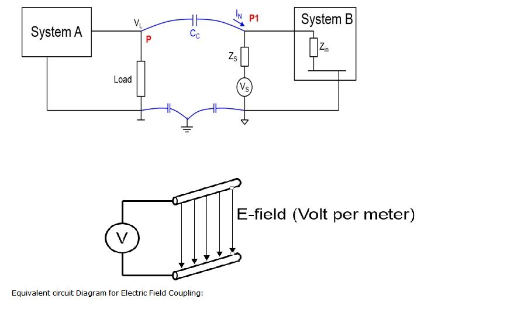

Shakshat Virtual Lab 
INDIAN INSTITUTE OF TECHNOLOGY GUWAHATI
The circuit below gives us basic idea of how interference is coupled electrically to a system. The System A generates a variable output which passes through the load. This signal passes through a portion of the circuit that is parallel to a circuit that supplies the input to System B. The air separating the two circuits acts as the dielectric between two conductors. Thus, this capacitor CC provides a linkage between the two circuits and transfers charge from System A to B. This current is added to the current generated by the supply voltage VS which is given as input to System B. This results in the output of System B to consist of unwanted components in addition to the actual output. This effect is greater when the two circuits are closer and reduces as the distance between them increases. The amount of noise also depends on the frequency and amplitude of the current IL.

The permittivity of the air as a function of the relative humidity can be calculated from the empirical relation